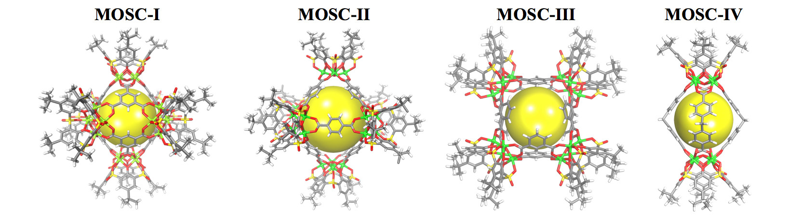

Electrochemical Sensing of Heavy Metal Ions with Metal-Organic Supercontainer Electrodes
Dr. Zhenqiang "Rick" Wang
Over the past few decades, electrochemical sensors have offered great opportunities for continuous monitoring of ionic species in clinical, industrial, and environmental applications due to their high sensitivity, short analysis time, large adaptability, portability, and low cost. Since their inclusion in ion-selective electrodes (ISEs) in the 1960's, receptor molecules, serving as ionophores, have proven particularly useful for a wide variety of electrochemical ion-sensing applications. Although significant progress has been made in the last decades, the development of highly selective, portable, and low cost ionophore-based ISEs still remains a hot topic for heavy metal ion sensing applications.
We recently developed a new family of synthetic receptors termed metal-organic supercontainers (MOSCs), which are constructed from the assembly of divalent transition metal ions (e.g., Ni2+, Co2+, Zn2+, etc.), carboxylate linkers, and sulfonylcalixarene-based container precursors (Figure 1). These MOSCs possess multiple binding cavities/pockets within a single host; therefore, their modular structure and highly functional nano-cavity would make them an ideal class of ionophores. Furthermore, the rational design of ion-selective electrodes utilizing MOSCs as an ionophore offer the perfect platform towards improving current electrochemical methods for heavy metal ion sensing. The specific objective of this project is to investigate the fundamental behavior and incorporation of MOSCs as novel electrochemical sensing devices for the monitoring and detection of heavy metal ions that are environmentally relevant, such as Pb2+ and Cd2+.

Figure 1. Four representative examples of metal-organic supercontainers (MOSCs) highlighting their internal nano-cavity with a yellow sphere. Color code: divalent metal ions in green, oxygen in red, carbon in grey, sulphur in yellow, and hydrogen in white.